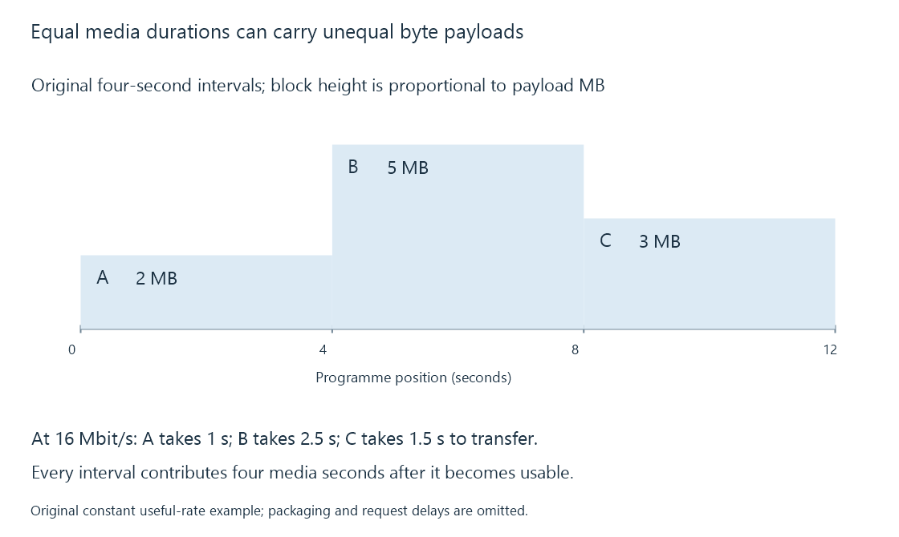

Segmented streaming and addressable media intervals
Segmented streaming presents media as a sequence of addressable intervals whose timing and initialization information let a player retrieve and assemble the programme.
Segmented streaming gives a player a sequence of addressable media intervals. Instead of treating a programme as one long download, the player discovers and retrieves the intervals needed next, keeps enough ahead for playback, and advances through their timeline.
HLS and MPEG-DASH use this approach. A segmented delivery path can carry copied source streams or newly encoded output from an Emby conversion pipeline. Segmentation describes how that output is organized and delivered.
The interval is the useful unit
An original twelve-second example has three four-second intervals:
| Segment | Programme interval | Encoded payload |
|---|---|---|
| A | 0–4 seconds | 2 MB |
| B | 4–8 seconds | 5 MB |
| C | 8–12 seconds | 3 MB |
Their durations match; their sizes do not. The middle scene may simply take more encoded bits.

At a useful transfer rate of 16 Mbit/s, ignoring headers and other delays, these payloads take 1, 2.5 and 1.5 seconds to obtain. Each still contributes four seconds of media. The player's reserve depends on how those arrivals compare with consumption, including interruptions between requests.
A segment locator can identify a separate object or a byte range inside a larger object. A segment also need not contain both video and audio: separate tracks can be addressed independently and combined by the player.
Initialization supplies the meaning of the bytes
Encoded samples require configuration. In fragmented MP4 delivery, an initialization resource supplies track descriptions and related information, while later media fragments provide timed samples.
A player entering the presentation midway needs the relevant initialization as well as the chosen later media. Possessing segment C's bytes alone does not necessarily give it all the information needed to interpret them.
The initialization resource is reusable while its configuration remains applicable. A boundary that changes the configuration can require another initialization resource and corresponding player handling.
Continuity comes from timing and dependencies
Request completion order is not programme order. A player can retrieve future data ahead of time, then present samples according to their timestamps. Separate audio and video paths likewise depend on their intended time relationship rather than on which HTTP request completes first.
Decoding dependencies cross another boundary. If a video segment begins with pictures that depend on earlier pictures, entering at that boundary may require an earlier access point. A presentation that advertises independently decodable segments makes a stronger promise than one that merely provides segment URLs.
Stream discontinuities mark changes that need additional interpretation. A new timestamp origin or track configuration is different from a network gap between two otherwise continuous segments.
Short intervals create more scheduling opportunities
More frequent boundaries can provide earlier opportunities to change representation or react to a seek. They also increase object and scheduling activity.
For an original ten-minute programme, four-second intervals mean 150 media intervals per track; one-second intervals mean 600. That is four times as many intervals, before accounting for initialization, playlist updates, parallel tracks or retries. The numbers describe this example, not prescribed segment durations.
Adaptive bitrate streaming additionally needs usable alternatives for the same programme moments and a selection policy. A single-representation segmented stream still has segments, while a server that changes its encoder settings for a new session has not automatically supplied a client-switchable ladder.
See Also
- HTTP Live Streaming (HLS)
- MPEG-DASH and its media presentation description
- Common Media Application Format (CMAF)
- Adaptive bitrate streaming and representation selection
- Buffering, ready media and playback reserve
- Stream discontinuities and timeline changes